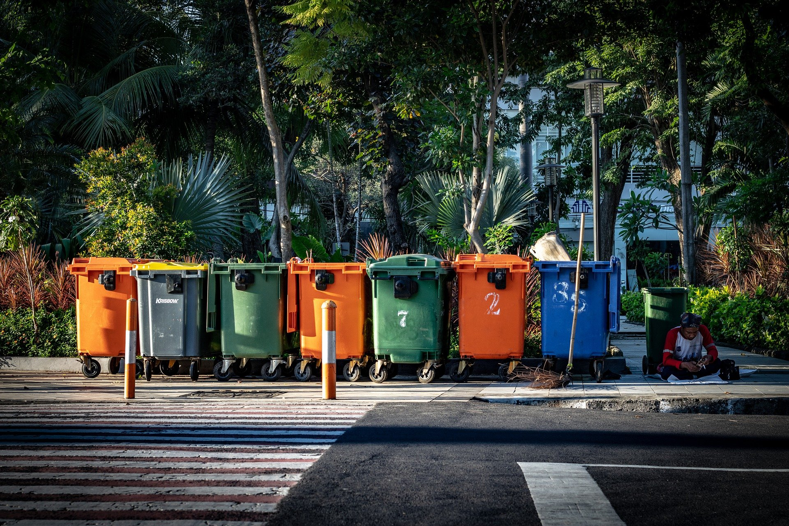

La Tierra es nuestro hogar, proporcionándonos aire para respirar, agua para beber y tierra para vivir. Sin embargo, las actividades humanas han impactado significativamente el medio ambiente, provocando contaminación, cambio climático y la destrucción de los ecosistemas naturales. Limpiar nuestro planeta no es solo una responsabilidad, sino una necesidad para la salud del medio ambiente y de las futuras generaciones.
Adoptar hábitos sostenibles, reducir los desechos y promover la conciencia ambiental son pasos fundamentales para restaurar y proteger la Tierra. Este artículo explora la importancia de mantener limpio nuestro planeta, las consecuencias de la contaminación y las acciones que podemos tomar para marcar la diferencia.

| ant | sig | menu |